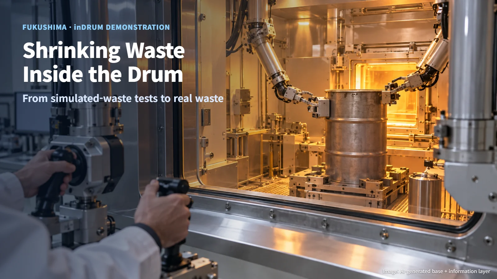
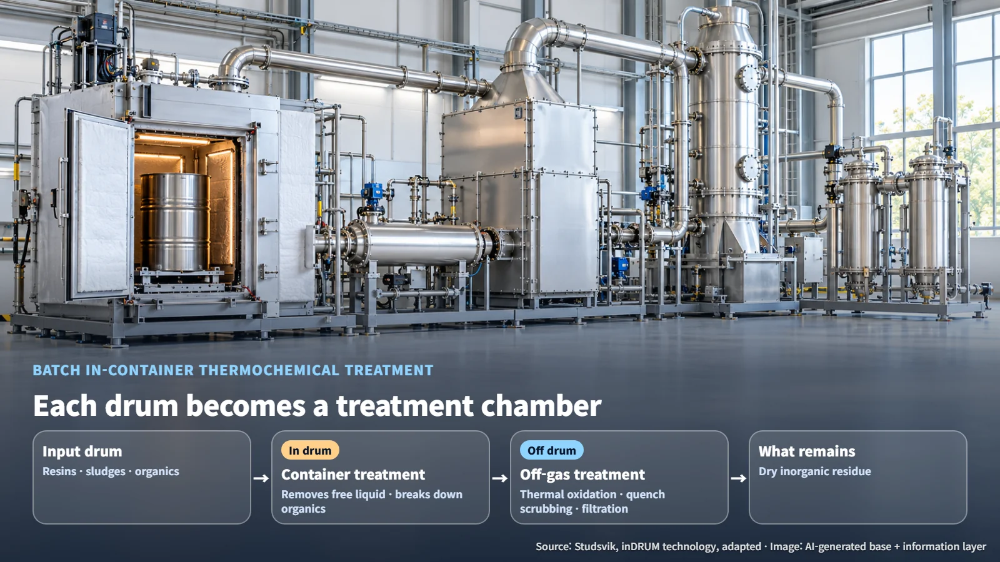
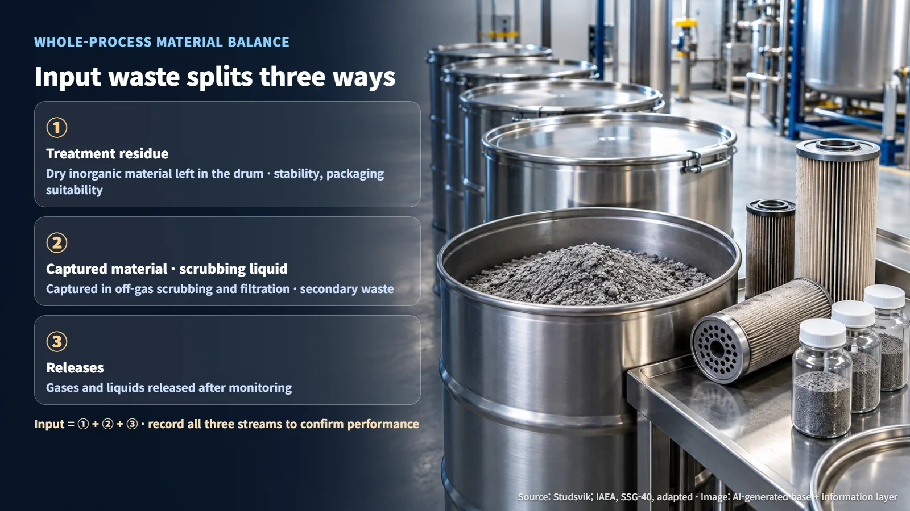
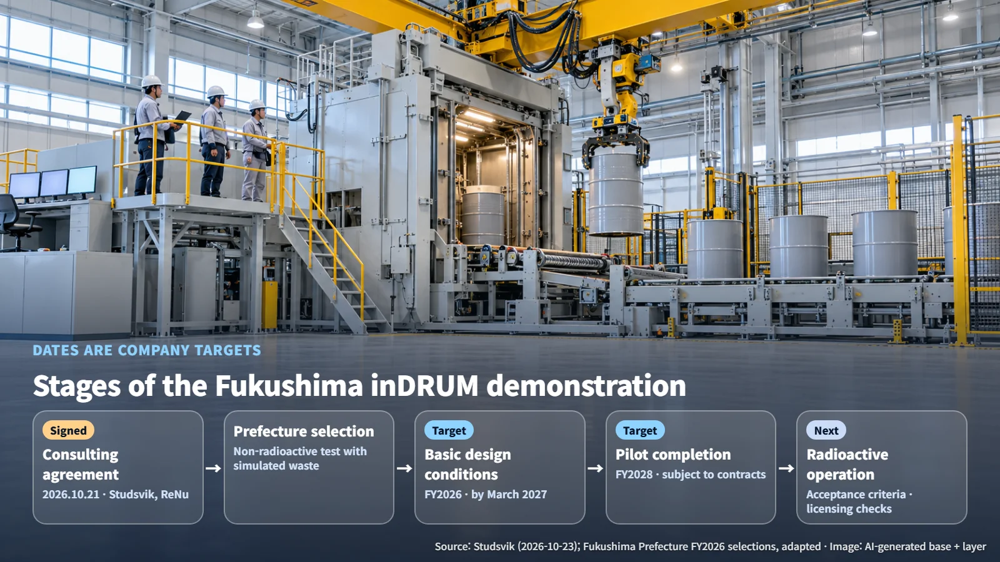

Japan · Waste Treatment
Shrinking Waste Inside the Drum: What the Fukushima inDRUM Demonstration Will Test
Studsvik and ReNu Industries are preparing a simulated-waste demonstration of in-drum thermochemical treatment in Fukushima, and the next gates are material balance, acceptance criteria and licensing.
When you hear that radioactive waste can be "treated to reduce its volume," a natural question follows: where does the missing volume go? On October 21, 2026, the Japanese subsidiary of Sweden's Studsvik and Japan's ReNu Industries signed a technical consulting agreement, starting preparations to demonstrate a waste treatment technology called inDRUM in Fukushima. Let's look at what happens inside the drum, and at the checks that remain before the process is used on real waste.

What Happens Inside the Drum
inDRUM is a batch thermochemical technology that applies heat to waste while it stays inside its container. "Batch" means the waste is processed one container at a time rather than fed through a continuous line. During treatment, the process removes free liquid from the container, meaning water that pools or moves around, and breaks down organic material. According to the company's description, the waste it targets includes resins, sludges and organic materials.
The plant consists of two connected systems. One is the container treatment unit that processes the drum. The other is an off-gas treatment system that handles the gas coming from the drum through thermal oxidation, quench scrubbing, filtration and similar steps. Picture each drum becoming a small treatment chamber, with equipment next to it that burns, washes and filters the gas.

So what changes? The approach reduces the burden of taking waste out of its container to sort and handle it. When treatment is complete, a dry, inorganic residue remains in the drum. How much the volume shrinks depends on the composition of the waste, so the outcome has to be assessed against the characteristics of the actual waste.
Where the Reduced Volume Goes: Residues and Secondary Waste
A useful concept here is the material balance: a ledger that compares what goes in with what comes out. Waste fed into inDRUM ends up in three broad streams:
- Treatment residue that stays in the drum (dry, inorganic material)
- Material and scrubbing liquid captured in off-gas scrubbing and filtration
- Gases and liquids released after monitoring
Written as an equation: input waste = treatment residue + captured material and scrubbing liquid + releases. Gas from the drum flows into the off-gas treatment system, and the material captured by scrubbing and filtration there also becomes secondary waste that must be managed.

That is why treatment performance becomes fully visible only when the records cover the captured material, scrubbing liquid and releases along with the residue in the drum. For the residue, the checks are stability, remaining liquid and suitability for packaging. For secondary waste, the checks cover gaseous and liquid releases and how captured material will be managed afterward.
The International Atomic Energy Agency's (IAEA) Specific Safety Guide SSG-40 divides waste management into pretreatment, treatment, conditioning and storage, and explains that the result of each step has to connect to transport, storage and disposal. Conditioning is the work of producing a waste form and package suited to later management. inDRUM residues can also be compacted or solidified further, depending on disposal requirements.
Scope and Schedule of the Fukushima Demonstration
Setting the Swedish and Japanese stages side by side makes the position clear. Studsvik operates a full-scale demonstration facility in Nyköping, Sweden, and has announced that it is pursuing use of the technology to treat waste from the European Spallation Source (ESS). The Japanese project is at the technical consulting stage, developing design conditions for Japan. Studsvik provides design-condition data and advice, while ReNu handles a pilot design matched to the characteristics of on-site waste and to Japan's seismic and regulatory requirements. Detailed performance test results from a facility in Japan have not yet been published.
Fukushima Prefecture's list of newly selected projects for FY2026 describes this project as a non-radioactive demonstration using simulated waste and the establishment of remote handling technology. Starting from the town of Okuma, the project aims to build an overseas technology as Japanese-style equipment and to create supply-chain participation for local companies and a workforce base.
All dates are the companies' targets. Basic design conditions are planned within FY2026, the fiscal year ending in March 2027. Completion of the pilot is targeted for FY2028, subject to the necessary contracts being signed. Since FY2026 ends in March 2027, applying the same convention gives FY2028 as the fiscal year ending in March 2029 (our calculation). According to Studsvik's announcement, the subsidy is up to 700 million yen; the prefecture's selection list itself gives no individual amounts or grant conditions.

The Next Gates on the Way to Real Waste
The simulated-waste demonstration yields data on handling and on how the process responds. Applying the technology to actual radioactive waste will require additional tests that confirm radionuclide distribution, releases, residues and packaging suitability. Three frameworks come into play.
First, waste acceptance criteria (WAC) are the conditions a waste must meet to be accepted by the next treatment, storage or disposal step. Requirement 12 of IAEA GSR Part 5 calls for acceptance criteria consistent with the safety case, specifying radiological, mechanical, physical, chemical and biological characteristics. It also requires routes for segregating, returning or otherwise treating waste that does not meet the criteria.
Second, a safety case is a body of documents that presents the facility, operations, risk assessment and management system together. This is an international safety requirement; individual licensing in Japan is decided under national law by the responsible authorities.
Third, Japan's Nuclear Regulation Authority (NRA) has designated the Fukushima Daiichi Nuclear Power Station as a specified nuclear facility, reviews and inspects its implementation plan, and monitors risk reduction. If inDRUM moves toward installation and operation on the plant site, its relationship to this framework will need to be confirmed, so the pilot's site and the scope of actual radioactive operation are the first items to check.
The next pieces of evidence to watch are finalized basic design conditions, simulated-waste test results, the scope and approval of actual radioactive operation, and the acceptance route for the final waste. Building the acceptance conditions of final disposal in early allows any post-treatment or repackaging requirements to be reviewed at the design stage.
The waste that shrinks inside the drum moves on as residue, captured material and monitored releases, and each stream follows its own management route. The Fukushima demonstration is the first step toward recording and confirming those routes one by one.